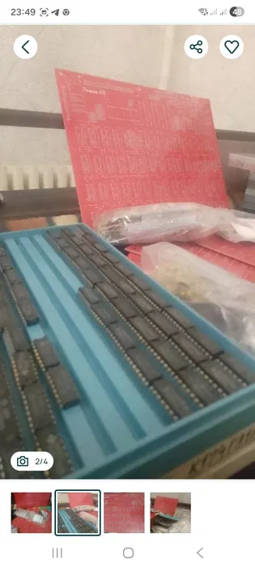

Львів 48 — це один із найбільш акуратних та продуманих клонів ZX Spectrum 48K, створений з урахуванням досвіду попередніх схем. Він зберігає повну сумісність із класичним софтом, але водночас пропонує більш стабільну роботу та чистіший відеосигнал.
Цей варіант представлений як конструктор, що дозволяє самостійно зібрати комп'ютер і отримати справжнє задоволення від процесу. Компоненти стандартні та доступні, що робить плату зручною як для досвідчених радіоаматорів, так і для тих, хто хоче прокачати навички пайки.
У порівнянні з більш ранніми клонами, "Львів" відомий своєю надійністю та меншою кількістю “глюків”, що робить його чудовою базою для щоденного використання або колекції.
Якщо ти шукаєш Spectrum, який просто працює — це саме він.
